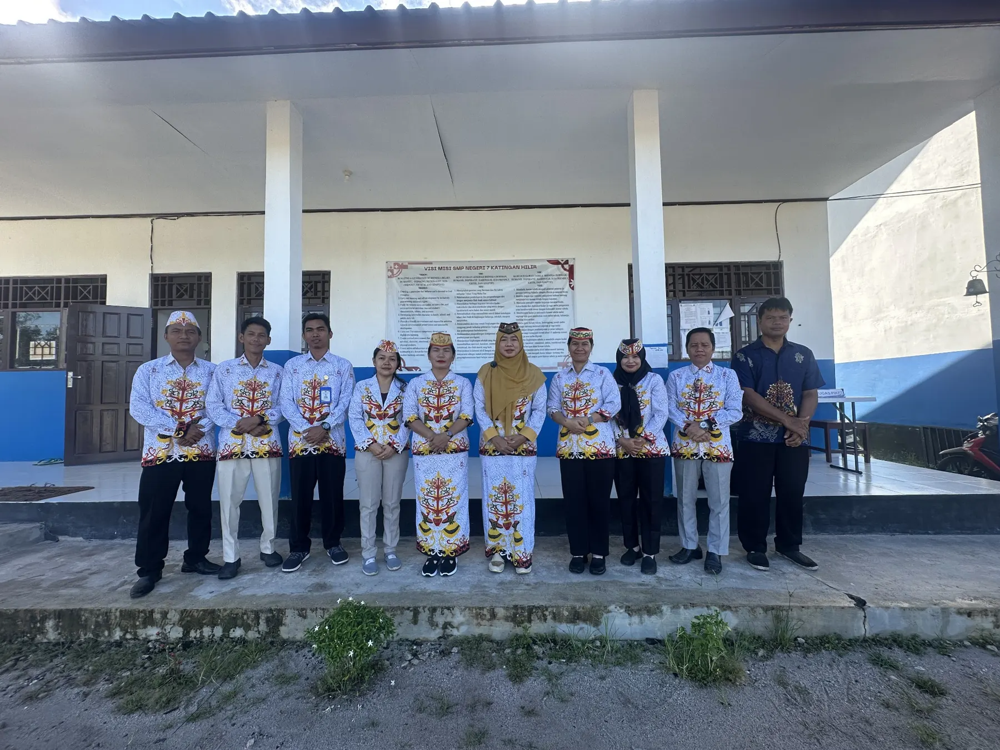
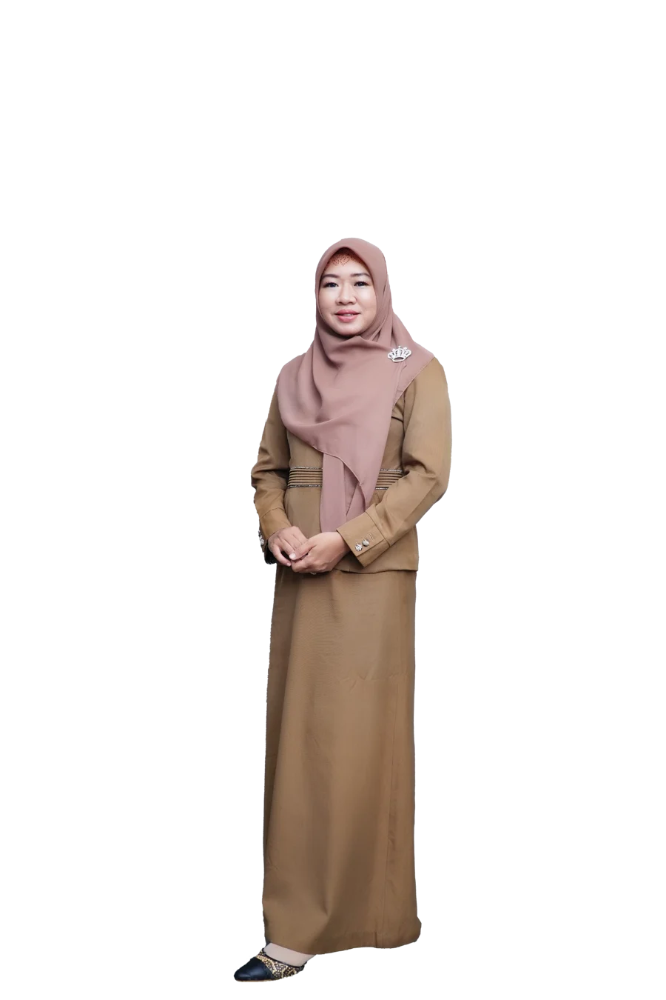

Menciptakan generasi yang beriman dan bertakwa terhadap Tuhan Yang Maha Esa.
Profil SekolahMengenal lebih dekat
Mengenal lebih dekat
SMP Negeri 7 Katingan Hilir
Ruang pendidikan yang menumbuhkan karakter, membuka potensi, menghargai keberagaman, dan menginspirasi setiap langkah murid.

Identitas & Arah Sekolah
Berakar pada Nilai, Bergerak untuk Masa Depan
NAMA SEKOLAHSMP Negeri 7 Katingan Hilir
NPSN · STATUS70047153 · Sekolah Negeri
ALAMATJl. Manjau, Kasongan Lama, Katingan Hilir, Kabupaten Katingan, Kalimantan Tengah
160Peserta Didik77 laki-laki · 83 perempuan
9Guru
6Rombongan Belajar
4 · 2 · 1Ruang kelas · Laboratorium · Perpustakaan
BHINEKA
Visi SMP Negeri 7 Katingan Hilir
Mewujudkan Generasi BHINEKA
Beriman, Humanis, Inspiratif, Nasionalis, Eco-Friendly, Kritis, dan Adaptif.
Langkah Nyata Menuju Visi
Misi Sekolah
Delapan misi sebagai arah pelaksanaan pendidikan dan pengembangan murid.
Melaksanakan pembelajaran dan pengembangan diri dengan menjamin hak anak secara inklusif.
Menyediakan berbagai kegiatan intrakurikuler, kokurikuler, dan ekstrakurikuler sesuai karakteristik serta bakat dan minat murid.
Menumbuhkan sikap nasionalisme murid dalam kehidupan sehari-hari di lingkungan keluarga, sekolah, maupun masyarakat.
Melaksanakan aktivitas ramah lingkungan dan penuh tanggung jawab terhadap pelestarian lingkungan hidup dan pembangunan berkelanjutan.
Melaksanakan pengembangan kompetensi abad 21 dalam pembelajaran era digital.
Menciptakan lingkungan sekolah yang dapat menumbuhkan spiritual, karakter, emosional, sosial, intelektual, dan fisik murid yang baik.
Menciptakan kolaborasi aktif dengan orang tua dan masyarakat sebagai wadah pembelajaran dan pengimplementasian hasil belajar murid.
Karakter yang Menjadi Pegangan
Nilai BHINEKA
BHINEKA bukan hanya identitas, tetapi nilai yang dihidupkan dalam keseharian dan proses belajar di sekolah.
Beriman
Menghayati dan mengimplementasikan keimanan masing-masing serta membangun pribadi yang kokoh.
Humanis
Menumbuhkan cinta kasih, menghargai hak anak, dan memanusiakan sesama.
Inspiratif
Mengembangkan bakat dan minat agar karya maupun perilaku dapat memberi teladan dan manfaat.
Nasionalis
Menumbuhkan cinta bangsa, menghargai kemerdekaan, dan menghormati bangsa lain.
Eco-Friendly
Peduli lingkungan, menjaga kelestarian alam, dan membangun kebiasaan berkelanjutan.
Kritis
Berpikir jernih, menimbang informasi, dan bijak sebelum mengambil keputusan.
Adaptif
Siap belajar, menyesuaikan diri, dan bertumbuh menghadapi situasi serta perubahan.
Generasi BHINEKA
Nilai yang dihidupkan dalam keseharian dan proses belajar di sekolah.

Kepemimpinan Sekolah
Fahriyana, S.Pd., M.Pd.
Kepala SMP Negeri 7 Katingan Hilir
Memimpin dengan semangat kolaborasi, kepedulian, inovasi, dan komitmen untuk menghadirkan pendidikan yang bermakna serta berpihak pada perkembangan murid.
Berkarakter. Berprestasi. Menginspirasi.
Setiap murid memiliki potensi. Bersama, sekolah, keluarga, dan masyarakat membuka ruang agar potensi itu tumbuh menjadi karya dan kebaikan.
Kenali Program Unggulan →